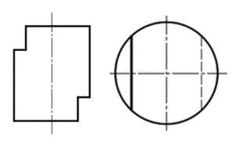

设计表现技法单选题
1.艺术设计中所谓的“外在形式表现”，主要是指产品设计（包括建筑）外在造型完整性的视觉样式，即是（ ）。（ ）
效果图
2.美国总统的座机“空军一号”就采用了波音（ ）飞机并由罗维完成了它的色彩设计。（ ）
707
3.工业设计表现图具有很强的艺术性，在表现工业设计表现图的艺术性过程中可以将产品分成几个视图来平面化，在平面化的视图上运用（ ）来处理造型。（ ）
形式美法则
4.（ ）是最早开业的工业设计师之一。他原是一位成功的平面设计艺术家，经营过广告业，并享有促进高质量产品销售的声誉。（ ）
提草
5.（ ）曾提出“功能绝对第一”和“最少主义”。（ ）
米斯・凡德罗
6.意大利有许多著名的设计公司，包括汽车设计公司，其中平尼法里那公司最有影响的设计是（ ）系列赛车。（ ）
法拉利
7.“蚁”椅是丹麦具有国际影响的设计师（ ）于1958年设计的。（ ）
雅各布森
8.（ ）的整体设计发展进程中，包豪斯的产生并未起到举足轻重的作用。包豪斯的影响不在于它的实际成就，而在于它的精神。（ ）
美国
9.60 年代的POP流行派起源于（ ） 。（ ）
英国
10.红蓝椅是风格派的典型作品之一，是由以下哪位设计师于1917-1918年设计的？ （ ）
蒙德里安
11.以下不属于设计表现现实意义的是（ ）。（ ）
设计表现对从事艺术但非设计从业人员来说可有可无
12.德意志制造联盟的创建人是（ ） 。（ ）
穆特休斯
13.20世纪初，就在德国现代主义设计迅速发展时，荷兰也出现了具有相同设计风格特征的运动，叫做（ ）。（ ）
风格派运动
14.1957年成立于英国伦敦的“国际工业设计协会”英文缩写为：（ ） 。（ ）
ICSID
15.A2图纸的图幅是（ ）。（ ）
840×594
16.托勒最有名的产品是（ ） 。
维也纳咖啡馆椅
17.对于绿色设计产生直接影响的是维也纳出生的美国设计理论家（ ） 。（ ）
维克多・巴巴纳克
18.工业设计产品表现图要比其他图纸更具说明性，这种说明性必须符合客观对象的（ ）。（ ）
真实性
19.米切尔・托勒生于德国，他从1836年左右就开始进行（ ）家具实验，1853年在维也纳开设了自己的工厂。（ ）
曲木
20.表现效果图是由高度概括的绘画技巧和（ ）相结合而成。（ ）
准确的透视图
21.可口可乐标志和饮料瓶的设计是以下哪位设计师20世纪30年代的成功之作？ （ ）
罗维
22.形体基本上有（ ） 种形态存在。（ ）
2
23.视觉传达设计通过视觉来传递各种（ ）。（ ）
信息
24.2010广州亚运会火炬的名称是（ ） 。（ ）
“潮流”
25.以下最快速的设计表达方式是（ ） 。（ ）
草图设计
26.国际工业设计协会（ ）年成立于英国伦敦。（ ）
1957
27.20世纪60年代，一些国家和地区出现了一种复兴20世纪20-30年代的现代主义，追求几何形式构图和机器风格的（ ） 。（ ）
新现代主义
28.18世纪下半叶英国家具行业最著名的人物是（ ） 。（ ）
切普代尔
29.设计方法可大致归纳为对比法、离散法、形象法和（ ）。（ ）
逻辑法
30.经过长期的发展，中国宋代的（ ）达到了鼎盛时期。（ ）
瓷器
1.工业产品表现的常用视角是（ ）。（ ）
一点透视中的平视角度
2.以下不属于平行透视与成角透视的异同点的是（ ）。（ ）
物体对象竖线与画面垂直。
3.仰视时垂直边线的灭点称为（ ）。（ ）
顶灭点
4.在透视学中，作画者眼睛的位置称为（ ）。（ ）
视点
5.真正严谨的透视法则是出现在（ ）时期。（ ）
意大利文艺复兴时期
6.既不平行地面也不垂直地面的平面叫做（ ）。（ ）
三点透视
7.画面平行线消失在无穷远处视平线上的图是（ ）。（ ）
透视图
8.（ ），是一种提高视点位置的画法，通过提高视点来俯视空间和物体的面貌。（ ）
俯视图
9.以下适合用三点透视表现的是（ ）。（ ）
高层建筑
10.一点透视又叫（ ）。（ ）
平行透视
11.以下对透视常用名词表达不正确的是（ ）。（ ）
画面：假设的透视图形产生的立体画面
12.室内平行透视，最多可以见到（ ）个面。（ ）
五
13.一点透视最早的发现者是（ ）。（ ）
莱昂纳多・达・芬奇
14.以下不属于正六面体平行透视中三组边线的透视方向描述正确的有（ ）。（ ）
有四条边线与画面既不垂直也不平行
15.立方体的所有面都产生形变的是（ ）。（ ）
散点透视
16.在平行透视中，当正立方体处于（ ），在正中线上或过主点的任意一条直线上，都可以看到一个正方形原面加一个侧立面，或加一个水平面或加一个斜面。（ ）
主点以外的视平线
17.物体对象每一个面都不与画面平行，而且形成一定的角度，并向两侧的点（余点）消失，这种透视现象叫（ ）。（ ）
两点透视
18.在成角透视中，正立方体在视平线以外时，可以看到（ ）个成角面。
三
19.在成角透视中，正立方体上下移动时，越远离视平线，两组成角之间的夹角越（ ），体积越（ ）。（ ）
小，强
20.成角透视中，正方体的边棱呈现（ ）。（ ）
两种状态
1.哪一种对结构的描述是错误的? （ ）
物体的装饰。
2.下图中四个几何图形的面积相等，但看起来（ ）的面积最大。（ ）
三角形
3.在素描训练中，表现物象的明暗关系是为了塑造物象的（ ） 。（ ）
形体
4.对结构素描的观察方法描述错误的一项是（ ） 。（ ）
了解光的影响以及明暗变化。
5.（ ）既是设计素描的表现基础，又是产品形态的骨骼。（ ）
几何形态
6.形体是（ ）的，具有长、宽、深。（ ）
立体
7.构图的样式一般分为两大类（ ） 。（ ）
对称式构图和均衡式构图。
8.（ ） 是区别物象形体面的转折和起伏特征的关键,它处于明暗两部分的交界部位。（ ）
明暗交界线
9.结构素描注重对（ ）的正确理解，根据结构规律去描绘物体。（ ）
结构规律
10.对结构素描的描述错误的是（ ） 。（ ）
表现物体明暗、空间质感。
11.设计素描的表现方法有三种：设计结构素描、设计素描和（ ） 。（ ）
具象素描
12.（ ）是结构在空间中的存在形式。（ ）。（ ）
体
13.物体的结构类型大体上可以分为（ ） 。（ ）
框架型和体量型
14.节奏是韵律的（ ），韵律是节奏的（ ）。（ ）
条件，深化
15.设计素描的基本表现形式是（ ） 。（ ）
线
16.在结构素描中，为了清晰准确地把握物体的结构和比例，（ ）的作用是很重要的。（ ）
辅助线
17.结构素描的表现形式主要用简练、明了、准确的（ ）表达形体结构。（ ）
线条
18.以下对设计素描表述不正确的是（ ） 。（ ）
是工业设计方法最终表达手法
19.结构素描的最终目的是训练设计师用（ ）思维去理解对象，对表现对象进行综合性的理解和剖析。（ ）
三维
20.在绘制结构素描中，物体的形体结构、体面转折关系表现时，用线要明确肯定，多用（ ）。（ ）
实线
1.在设计草图阶段，用线来组织画面要注意的事项描述错误的是（ ）。（ ）
注意明暗关系
2.手绘设计草图时，透视图通常采用（ ）观察法来表现，即眼睛和产品的位置相对固定，看到了什么就画什么，表达方式较为感性直观。（ ）
定点式
3.以下不属于设计草图作用的是（ ）。（ ）
可直接作为产品制作的比例图
4.以下关于进行设计草图训练的目的错误的是（ ）。（ ）
作为设计表现能力的炫耀资本
5.设计速写图绘制好后一般都会用扫描仪扫描下来导入电脑中制作PPT进行展示，如果线条过细过淡的话，则不利于电脑处理与展示，所以一般会在A4幅面的复印纸上用（ ）粗细的黑色中性笔画单线速写。（ ）
0.5
6.画设计速写时要达到变化统一的目的，应注意的法则是（ ）。（ ）
对比、均衡、节奏
7.手绘设计草图是一种（ ）的思考方式，是通过视觉思维完成创造能力的。（ ）
具象化
8.展示草图能清晰地表达（ ）、（ ）、（ ），必要时为加强主题还会估计使用环境和使用者。（ ）
以上都不对
9.采用（ ）的形式来表现形体的轮廓、明暗、光影变化等，可传达出较强的体积感、质感和空间感。（ ）
线面结合
10.绘制设计草图时，形体的转折、暗部、阴影等，可以用大小、疏密不同的（ ）来表现材质或形体的过渡变化。（ ）
点
11.一幅产品速写三视图中，主要用（ ）绘制，以保证图像的明确性。（ ）
单线
12.以下不属于快速设计表达的作用的是（ ）。（ ）
锻炼手绘能力
13.以说明产品的结构和细部为宗旨的是（ ）。（ ）
细节草图
14.设计草图要以（ ）为主，从而准确表达形态的轮廓、空间感与质感等。（ ）
线
15.（ ）是指将一根线条分为两笔来画，并在接头处留下一个小缝隙，它既可以模拟产品的反光，也可以作为画长线条时的过渡。（ ）
断线
16.形态造型的三个基本要素不包括（ ）。（ ）
色彩的运用
17.（ ）是指在确定了线条的粗细之后，整幅画面全都使用这样的线条。（ ）
单线
18.设计草图时，如果一条线中途必须停顿，可以（ ）的距离，从老线的末端开始画新线。（ ）
隔开一段微小
19.（ ）是指将产品的某些有特色的、细小的或较复杂的局部特征放大后，以三视图或透视图的方式加以特别展示，如局部结构的旋转性、伸缩性等。（ ）
细节图
20.线的表现力很丰富，以下不属于线条特征的是（ ）。（ ）
以上都不对
1.（ ）主要取决光源的色温，并影响室内的气氛。（ ）
光色
2.（ ），是指颜色之间面貌的相互差异所形成的对比关系。（ ）
色相对比
3.（ ）的灯光有助于人们安静地休息，消除疲劳，在这种颜色的卧室中更容易入睡。（ ）
蓝色
4.（ ），是指颜色之间的鲜艳程度对比。（ ）
纯度对比
5.色彩在画面中总是要有主要倾向的，我们称这种色彩倾向为（ ）。（ ）
色调
6.色彩是通过（ ）进入人的眼睛而产生的视觉感受。（ ）
光的反射
7.色彩设计时，应注意产品的使用环境。一般寒冷条件下以（ ）为好，炎热环境下工作的产品则宜用（ ）且较明快的色调。（ ）
暖色，冷色
8.（ ）对眼睛的刺激较小，属于镇静色，医疗器械等产品多采用这种色系，可以安抚人的情绪并保持平静的状态。（ ）
冷色
9.（ ），是指不同颜色本身固有的明暗程度的对比。（ ）
明度对比
10.对于明度而言，明亮的高明度色彩，具有（ ）的感觉，黯淡的低明度色彩，具有（ ）的感觉。（ ）
前进，后退
11.构成色彩的主要因素不包括（ ）。（ ）
可变色
12.光色对比在同一环境中，可以利用不同色差的灯光，色差越（ ），那么透过光色的对比就能制造更强的层次感。（ ）
大
13.一般说来，光从物体的（ ）照去，面貌显得自然。（ ）
斜前方
14.不同的颜色会引起人们在距离感觉上的差异，就是色彩的（ ）。（ ）
进退感
15.以下哪些颜色不能给人以兴奋感？（ ）
蓝色
16.（ ）是使眼睛最能适应和最能获得休息的颜色，在自然界中，它是植物的颜色，也称为生命色。（ ）
绿色
17.（ ）是室内色彩设计中首要考虑和选择的问题。（ ）
背景色
18.在进行设计时，可以使用（ ）系的色彩增加兴奋热烈的效果，运用（ ）系的色彩营造宁静，雅致的格调。（ ）
红色，蓝色
19.由于色彩的明显差异，产生不同的重量感，明亮的色彩显得（ ），暗的色彩显得（ ）。（ ）
轻，重
20.在工业安全用色中，（ ）是警告，危险，禁止，防火的指定色。（ ）
红色
21.小型机械使用（ ）的色彩相匹配较多，因其体积小，色块面积不大，对比强烈、鲜艳的色彩起到美化环境，引起人们兴趣的效果。 （ ）
纯度高
22.在有了基本照明时，当色温（ ），即气氛暖，但亮度很（ ）时，便会使人感到闷热烦躁。（ ）
低，高
23.色彩的轻重感与明度、纯度的关系为：明度（ ）的深暗色彩、纯度（ ）的暖色系感到重。（ ）
低，高
24.黑、白以及纯度高的色彩会给人（ ）感，灰色以及纯度低的色彩给人（ ）的感觉。（ ）
紧张，舒适
25.多色配置时，各种色彩之间不具有明显的明度或纯度对比，则感到（ ）；各种色彩在明度或纯度上形成强对比时，则感到（ ）。（ ）
柔软，坚硬
26.书房、办公室内，色温要求（ ），这样气氛就（ ），使人感到清凉、明净，以利于学习、工作、思考。（ ）
高，冷
27.明度对比中，浅色、白色有（ ）；深色和黑色有（ ）。（ ）
前进感，后退感
28.人机工程学中，安全色标准规定哪种颜色为安全色？（ ）
红、蓝、黄、绿
29.有一种色相对比，可以使各自的色相感鲜明，色彩显得饱满、丰富、厚实，容易达到强烈、兴奋的视觉效果。这种对比属于（ ）。（ ）
对比色色相对比
30.（ ）可以充分地表达产品的形态、结构、色彩、质感、量感等，还能表达无形的韵律、形态性格、美感等抽象内容。（ ）
色彩表现图
1.薄布料包括较薄的棉、麻、丝、化纤织物等，其特点是质地（ ），装饰感强，花色品种多，经济实惠，有一定的遮蔽性，隔声能力（ ）。（ ）
轻薄，好
2.在表现质感时，要注意反光和折射效果的是哪种材料？（ ）
玻璃
3.玻璃的（ ）透明度是最低的。（ ）
边缘部
4.以下不属于不透光低反光的材料的的是（ ）。（ ）
镀铬金属
5.毛、麻类织物布料主要包括粗毛料、仿毛化纤织物和麻编织物等。其特点为质地（ ）,厚实有重量感、温暖感,遮蔽性强,隔声能力（ ）。（ ）
粗糙，差
6.微晶石是现在流行的室内外装饰材料，它属于（ ）。（ ）
陶瓷
7.毛、麻类织物布料从其肌理及图案上，还可以体现（ ）、（ ）的特点。（ ）
轻薄，现代感
8.塑料是产品设计中最常表现的材质，其分为光泽塑料和亚光塑料，以下表述错误的是（ ）。（ ）
光泽塑料着色时应增加笔触。
9.木材是不透明、不反光的材料，绘制时要注意表现出木纹的肌理，其表面（ ），高光（ ）。（ ）
不反光，弱
10.渲染得运笔方法除了水平运笔法、垂直运笔法还有（ ）。（ ）
环形运笔法
11.在表现镀铬效果时，应选择（ ）的场景，以便利用环境来说明产品的结构和造型。（ ）
简单清晰
12.表现玻璃质感时用笔要轻松、准确，以（ ）作底色，要注意边缘线深浅，虚实的变化，再对明暗面进行处理。（ ）
中明度色
13.以下不属于磨砂材质的物体有（ ）。（ ）
哈哈镜
14.不同的物质其表面的自然特质称（ ），如空气、水、岩石、竹木等；而经过人工的处理的表现感觉则称（ ），如砖、陶瓷、玻璃、布匹、塑胶等。（ ）
天然质感，人工质感
15.以下对表现面布、毛毯、麻布等织物的质感不正确的方法是（ ）。（ ）
绘制其强烈的光影变化
16.石材的轮廓凹凸不整齐，在线条描绘轮廓时可以自由随意些，表面粗糙可以用（ ）的方式来突出石材的肌理。（ ）
点
17.木材质感的表现主要在（ ）上。（ ）
木纹的描绘
18.用于创造虚幻空间的材料是（ ）。（ ）
半透明的纱绸
19.对于带有一定颜色倾向的透明材料，表现时要考虑（ ）和（ ）的分量，若画过重，就会减弱其透光的特性。 （ ）
色相，纯度
20.在表现不透光而强反光的材料时，笔触应（ ） ，宜用界尺来画（ ），同时注意加重 的处理。（ ）
整齐平行，暗部
21.产品设计中，玻璃材质通常与（ ）材质搭配，这种搭配产生的效果使产品显得高贵、精致、现代又时尚。（ ）
金属
22.下面哪种玻璃被称为是安全玻璃？（ ）
钢化玻璃
23.为了强调金属表面的光滑质感，通常用（ ）表现。（ ）
黑白两色
24.金属装饰板材分为（ ）。（ ）
彩色钢板、不锈钢板及铝合金装饰板
25.透过玻璃看到的产品投影与直接看到的投影颜色相比（ ）。（ ）
稍浅
26.防弹玻璃是由（ ）和优质工程塑料经特殊加工得到的一种复合型材料。（ ）
石英玻璃
27.室内设计中大量使用镜面玻璃不锈钢等材料及投射折射等新型光源；在金属和镜面材料的烘托下形成绚丽夺目的室内环境。这类设计的艺术流派属于（ ）。（ ）
高技派
28.以下不属于玻璃材质特征的是（ ）。（ ）
柔软
29.以下不属于塑料的工艺性能的是（ ）。（ ）
活跃性、可塑性
30.表现皮革与塑料质感时，明暗过渡比较（ ），涂色时要（ ）。（ ）
缓慢，自然均匀
1.用马克笔绘制表现图，要选用表面（ ）的纸张，因为质地松软的纸吸收颜色的能力强，容易使画面灰暗，影响色彩的饱和度。（ ）
光滑
2.彩色铅笔的表现是以（ ）来形成画面，画面效果清淡。（ ）
排线
3.用纸吸水性强的纸绘制表现效果图时，画面表现感觉相对飘逸滋润，（ ），但画面明度相对（ ）一点，且不宜做过多的修改。（ ）
层次丰富，弱
4.用纸吸水性弱的纸绘制表现效果图时，画面感觉则相对（ ），色彩（ ），修改比较方便。（ ）
强烈，明亮
5.（ ）即是在有色背景上提高或加重的处理手法而形成的一种方便、快捷的表现技法。（ ）
底色高光技法
6.绘制表现效果图的纸张可分为哪两大类？（ ）
吸水性强的纸和吸水性弱的纸
7.以下对喷绘画面的程序和要求表达错误的时（ ）。（ ）
先深后浅、留深喷浅、先喷细节、后绘大面
8.（ ）是各类技法的深入和综合运用，它建立在对各种技法的深入了解和熟练掌握而定基础上，其具体运作及各种技法的结合与衔接，可根据画面内容和效果以及个人喜好和熟练程度来决定。（ ）
综合表现技法
9.水粉色是用（ ）来调和粉质材料。
水
10.色纸在使用中在于用纸色和底色作为中间层次，直接表达（ ）部分，以及少量的亮部和暗部。（ ）
高光和投影
11.（ ）胶质少，透明度高，用水调和画于纸上有色彩淡雅，细腻透明的清爽感觉。（ ）
水彩色
12.马克笔上色后不易修改，一般应（ ）。（ ）
先浅后深
13.以下不属于水彩色的渲染方法的是（ ）。（ ）
喷绘
14.（ ）马克笔色彩亮丽，且透明度好。（ ）
油性
15.多色马克笔绘图时，上色是最关键的一步，应按照产品的（ ）上色。（ ）
结构
16.以下最适合用于画设计草图的钢笔类型是（ ）。（ ）
弯尖钢笔（美工笔）
17.（ ）与铅笔的性质相近，所以在色彩媒介中是较易掌握的一种。（ ）
彩铅
18.使用马克笔时，可用（ ）的色笔处理粗糙的质感。（ ）
半干
19.以下不属于水溶性彩铅技法的是（ ）。（ ）
喷绘法
20.（ ）是常用的表现媒介，这两种媒介的特点在于轻松、快捷、简便。（ ）
马克笔+色粉
1.（ ）通过形状、材质、色彩、纹理、光影效果等的表现和艺术的刻画达到产品的真实效果。
渲染图
2.渲染三维模型时，哪种模型不可以渲染出物体的折射效果？（ ）
照片级真实感渲染
3.以下哪种图像格式支持背景透明？
PNG
4.按打印成型手段，三维打印可分为：光打印法、（ ）和熔化沉积打印法三大类。
喷涂打印法
5.在3dsmax中，目标摄像机有两个控制项。一个是（ ），它表示摄机的位置或人的眼睛位置：另一个是（ ），它表示摄像机的观察点位置或人的视点位置。
摄像机始发点，摄像机点
6.AutoCAD中，组合面域是两个或多个现有面域的全部区域并合起来形成的；组合实体是两个或多个现有实体的全部体积合并起来形成的,这种操作称（ ） 。
UNION
7.草模的作用是（ ）。
通过草模型可以处理构思草图不可能解决的空间问题
8.作为曲面造型的优秀典范软件是（ ）。
Rhinoceros
9.以下哪个不属于AutoDesk欧特克公司的产品？（ ）
modo
10.以下有关AutoCAD中格式刷的叙述错误的是（ ）。
只是一把颜色刷
11.12、下列哪个是photoshop图像最基本的组成单元？（ ）
象素
12.对AUTO CAD中正负号的理解正确的是（ ）。
在某些情况下表大小，在某些情况下表方向
13.三维模型中哪种模型可以进行布尔运算？（ ）
实心体模型
14.3dsmax由（ ）公司开发。
Autodesk
15.将绘制的图形保存为样板文件的文件名为（ ）。
dwt
16.在3DMXA中，复制快捷键是（ ） 。
Ctrl+c
17.CAD作业中，为了定义图形方便通常采用不同的坐标系，在以下坐标系中，其定义域为连续且无界的是（ ）。
世界坐标系
18.下面不属于二维造型的对象是（ ）。
Plane（平面）
19.下面的说法中，（ ）是正确的。
用PLAN命令可以将当前的UCS的XOY面设置为平面视图
20.以下不属于Rhinoceros文字类型的是（ ）。
虚拟
21.AUTOCAD中用于绘制圆弧和直线结合体的命令为（ ）。
多段线
22.下面的四种关于AutoCAD说法中（ ）是正确的。
MIRROR3D命令和当前的UCS是无关的
23.以下软件设计出来的造型不能直接投入生产的是（ ）。
犀牛
24.在执行Autocad命令时候一般有几种方式，它们分别是（ ）。
命令行；工具条；菜单；鼠标；
25.渲染三维模型时，哪种不可渲染出物体的折射效果？（ ）
照片级真实感渲染
26.下列属于位图图像的最基本组成单位是（ ）。
像素
27.AutoCAD用于实心体之间对齐的命令是（ ）。
ALIGN
28.在3DMAX软件中File/Save（文件/保存）命令可以保存（ ）类型的文件。
MAX
29.下面对3DMAX软件说法中正确的是（ ） 。
不管使用何种规格输出，该宽度和高度的尺寸单位为像素
30.渲染三维模型时，哪种模型可以渲染出物体的所有效果？（ ）
照片级光线跟踪渲染
设计表现技法判断题
1.素描可训练设计师精确捕捉、塑造客观形体，设计草图则是在素描基础上加以高度的概括和提炼，对所表现的设计进行形象的假设。（ ）
正确
2.在手绘设计草图中，线条越粗，线条会相对流畅醒目，细节表达得越清晰。（ ）
错误
3.在设计草图的绘制过程中，不应该太注重画面效果，而要注重观察、思索以及综合技法的运用。（ ）
正确
4.画线时由于心中在犹豫画线的起点和终点，可以用画笔在纸上来回绘制重复线条。（ ）
错误
5.临摹优秀的产品图片可以很好地锻炼设计者的速写能力，因此，在临摹的时候可以不用考虑其设计，只要临摹的像就行了。（ ）
错误
6.单线勾勒就是一线为主，其线条粗，细，柔，挺，可以产生不同趣味的画面效果。（ ）
正确
7.设计草图时，线面的组合形式要对明暗层次加以提炼、概括，表现出大的体面转折和凹凸关系，要多强调光影的丰富变化和细节刻画。（ ）
错误
8.手绘设计草图时不一定非要局限于主、俯、侧三个视图，而是可以选择正投影六个视图中的任意几个有特色的视图来绘制。（ ）
正确
9.通过观察产品实物来画透视图时，眼睛和产品的位置一定是相对固定的，绝对不能随便移动视线或产品，否则会出现多点透视的矛盾空间感。（ ）
正确
10.设计草图时，仅仅用线就能充分地表现产品的立体形象。（ ）
错误
1.形体则是诸多形状构成的统一体，是立体造型全方位的印象。（ ）
正确
2.立体性是客观世界一切物体的基本特征。（ ）
正确
3.对称构图如处理不当会导致构图单调、呆板。（ ）
正确
4.对形的理解，其重要的是对基本形的理解，因为基本形是最基本的组成，最容易认识、理解。（ ）
正确
5.结构是指物体外部形态的构造。（ ）
错误
6.结构素描与传统的素描最大的差别就是不但要画出看得见的外表形象，而且要画出产品看不见的内在结构及被遮挡的外部轮廓。（ ）
正确
7.对于艺术设计专业来讲，造型能力与创造能力或设计能力是同样重要的。（ ）
正确
8.结构素描区别于素描常用的明暗表现方法和线描法，它是直接通过形体的结构来刻画和表现。（ ）
正确
9.形体结构本质地决定着形体的外观特征，而光线照射所产生的明暗变化、“固有色”的深浅、透视变化等，只是其特征在特定条件下呈现的现象，这种现象无论怎么变化均离不开形体结构的制约。（ ）
正确
10.在手绘设计草图中，线条越粗，线条会相对流畅醒目
正确
1.成角透视也叫两点透视。（ ）
正确
2.成角透视的三种状态分别为正常、微动、余成角。（ ）
正确
3.将透视归纳为三种的定论，是由文艺复兴时期的伟大画家达・芬奇提出的，分别为大气透视、消逝透视、线透视。（ ）
正确
4.正立方体的一部分线是和视平线成平行关系，所以我们称之为平行透视。（ ）
正确
5.由正圆所画出的透视圆形，在任何情况下都为椭圆形。（ ）
正确
6.在成角透视中，立方体的两个灭点不在同一视平线上。（ ）
错误
7.平行透视也叫一点透视，是指物体的两组线，一组平行于画面，另一组垂直于画面，他们聚集于一个消失点。（ ）
正确
8.在一般情况下，成角透视中正立方体与画面成角小的，其比较正的面，见得窄。（ ）
错误
9.成角透视中，当正方体顶面与底面与视平线等高时，两组成角边夹角成平角，贴于视平线。（ ）
错误
10.在圆的透视中，椭圆形的最长直径把椭圆形分成不相等的两个部分，近的部分略小些，远的部分略大些。（ ）
错误
1.解构主义设计将观念中固定化的“结构模式”打散组合，希望通过新的排列组合产生一种“无意义”的意义。（ ）
正确
2.产品设计本身是一个系统化的流程，在这个流程中需要很多不同领域的人相互合作。（ ）
正确
3.表现效果图是将三维空间中的形体结构转换成具有二维空间的画面。它由 准确的透视图和高度概括的绘画技巧相结合而成。（ ）
正确
4.设计家的设计活动是感性的构思活动，无须理性的参与。（ ）
错误
5.产品设计任务书又称产品设计说明书，是预先对某一产品项目提出具体任务、指标、原则要求的任务性文件。（ ）
正确
6.德国著名设计师托勒设计的椅子是蛋椅。（ ）
错误
7.产品设计的过程从最初的创意到设计完成，都须借助图形手段把想象加以视觉化。（ ）
正确
8.表现效果图的绘画技法是科学性与艺术性相结合的具体表现。（ ）
正确
9.设计表现图是设计师与生产企业之间很好的媒介，是设计师快捷的艺术表现与严谨的逻辑思维及专业知识构建起的二维形态。（ ）
正确
10.产品设计内在因素的研究是产品设计的基础，所以不需要考虑其外在因素。（ ）
错误
1.我们将光的亮度降低，对于加强谈话时的私密性有一定的心理作用。
正确
2.当置身于不同色彩的环境时,如看到红色或看到蓝色时感觉温度会有冷暖的差别。（ ）
正确
3.色彩的前进、后退感形成的距离错视原理，在设计画面中常被用来加强画面空间层次。（ ）
正确
4.色彩的冷暖感主要是由色彩的明度来决定的。（ ）
错误
5.构成色彩的因素主要是光源色，固有色和环境色。（ ）
正确
6.相对来讲，红色、蓝色、黄色、绿色中亮度最高的是红色。（ ）
错误
7.色彩中最为被动的颜色是灰色，属中性色，有很强的调和对比作用。（ ）
错误
8.在效果图的色彩表现中，一般只选择一种固有色彩作明度的高低变化即可。（ ）
正确
9.色彩是通过光的反射进入眼睛而产生的视觉感受，没有光就没有色彩。（ ）
正确
10.在设计与听觉相关产品的色彩时，如果能准确把握人们的听觉与色彩的关联，可以为用户的使用增添情趣与审美的享受。（ ）
正确
11.在电脑屏幕中的CMYK模式下看到的色彩就是该图像印刷在印刷品上的色彩。（ ）
正确
12.明度高具有金属光泽感的色彩能提升产品的高级感；深沉稳重的色彩使造型具有内敛的品质。（ ）
正确
13.色彩在画面中总是要有主要倾向的，我们称这种色彩倾向为色调。（ ）
正确
14.产品设计中，设计者常把各种色相中强烈的色彩用于强调产品，吸引顾客，即使这种色彩的面积很大，使用频率很高，也不影响效果。（ ）
错误
15.光的物理性质是形成人们理解色彩的基础。（ ）
正确
16.色彩较之图文对人的心理影响更为直接。（ ）
正确
17.如果在一定距离上比较两个大小完全相等的色块，在暗底上的亮色块比亮底上的暗色块大许多。（ ）
正确
18.颜料分为两大类，即透明和不透明颜料。（ ）
正确
19.著名的“7秒钟定律”告诉我们面临玲琅满目的商品，人们只要7秒种就可以确定对这商品是否感兴趣。在这7秒之中，色彩的作用达到了67%。（ ）
正确
20.用于表现效果图的颜料现在主要是水粉色和水彩色，另外还有透明水色等。（ ）
正确
1.不同质地和表面加工的界面材料，给人们的感受不同。如平整光滑的大理石给人们的感受是：传统、富有乡土气息。（ ）
错误
2.金属反差大，反光强烈，常有镜面反射，色彩丰富。（ ）
正确
3.快速上色的目的就是表现产品的外观颜色以及对材料质感的简单描绘，同时在描画过程中理解不同材质的视觉特征。（ ）
正确
4.弯曲加工的方法制造曲线形造型，不仅可以缩小材料的断面尺寸，而且也便于涂饰。（ ）
正确
5.塑料的表面均匀，反差小，反光不强烈。（ ）
正确
6.表现木材时，可直接用钢笔画好纹理，直接铺上棕色系即可。（ ）
正确
7.普通塑料调子对比较弱，没有反光笔触，高光也少，过渡均匀，用色以固有色为主。（ ）
正确
8.木材的质感可有“底色+写实木纹描绘”的方法。（ ）
正确
9.效果图中的光滑材质要比实际情况看上去更加艳丽，对比度也更高。（ ）
正确
10.由物体的表面组织构造所引起的触觉质感，称为触觉肌理感。（ ）
正确
11.现代设计不仅要求有视觉上的美感，更要求有触觉上的享受。（ ）
正确
12.木材的亮部和暗部的反差较小，光滑木料有少许镜面反射，粗糙木料则无。（ ）
正确
13.天然大理石一般不耐酸，而人造大理石可广泛用于酸性介质的场所。（ ）
错误
14.铅笔作为表现力最丰富的工具适用于多种材料的质感表现。（ ）
正确
15.无论是宏观还是微观，只要是人感知到的物质，都有其特有属性。（ ）
正确
16.镀铬其自身几乎没有任何颜色。（ ）
正确
17.皮革和纺织物调子对比强，有明暗对比变化，产生高光。（ ）
错误
18.夹丝玻璃表面可以是压花的、磨光的，颜色可以制成无色透明或彩色。（ ）
正确
19.材质感的关键在于区别对待明暗反差、反射和高光。（ ）
正确
20.亚光金属的调子反差弱，无明显的明暗变化，高光一般。（ ）
错误
1.产品设计一般涉及三维图形的建模装配图的设计和工程图的绘制等。（ ）
正确
2.渲染图最重要的意义在于传达真实的信息。（ ）
正确
3.AutoCAD中，三维镜像(MIRROR 3D)命令复制物体时与当前的UCS无关。 （ ）
正确
4.在3D软件中，文字最具有复古的特征，因为它正好代表了一种形象。（ ）
正确
5.HSB中的H是指明度。（ ）
错误
6.在3DMAX中，只要是二维图形都能转换成编辑样条线。（ ）
正确
7.不是所有的三维软件都能提供“透明”的操作模式。（ ）
正确
8.图形是指按矢量形式存储的图形数据文件，而图像是指按点阵形式存储的图形数据文件。（ ）
正确
9.任何二维图元都具有厚度属性。（ ）
错误
10.一个对象要产生阴影就一定要被灯光照亮。（ ）
正确
1.绘图纸的纸质较厚，结实耐擦，表面较光，不适宜水彩，可适宜水粉。（ ）
正确
2.绘图纸的纸质较厚，结实耐擦，表面较光，不适宜钢笔淡彩及马克笔、彩铅笔、喷笔作画。（ ）
错误
3.水性马克笔修改时不可用毛笔蘸水洗淡(难以彻底洗净)，油性马克笔则不可用笔或棉球头蘸甲苯洗去或洗淡。（ ）
错误
4.使用马克笔笔触叠加时，注意不要完全覆盖，要有一定的缝隙透气。（ ）
正确
5.勾线淡彩的表现技法可充分发挥线条和色彩的性格，适合于结构和形体复杂的空间环境的表现。（ ）
正确
6.水溶性彩色铅笔可发挥溶水的特点，用水涂色取得浸润感，也可用手指或纸擦笔抹出柔和的效果。（ ）
正确
7.马克笔具有方便，快捷，色彩丰富，均匀，不用调色，笔触清晰富有表现力的特点。（ ）
正确
8.马克笔绘图时，如需使用尺子，须使用有凹槽的尺子且使凹槽与纸面接触，避免色笔晕开。（ ）
正确
9.用同色系列的马克笔表现产品的明暗关系，无须考虑色彩关系，只考虑明暗关系，比较容易把握。（ ）
正确
10.马克笔的同色叠加会显得更深，多次叠加则无明显效果，且容易弄脏颜色。（ ）
正确
设计表现技法多选题
1.在艺术设计中，（ ）和（ ）是创造性思维的根本点。（ ）
发现问题
分析问题
2.以下属于成角透视特征的有（ ）。（ ）
两个消失点
最少可以看到两个面
最多可以看到三个面
垂直，斜边成角
3.表现技法的作用有（ ）。（ ）
设计师用图像表现自己的设计构思
能形象直观地表现设计物品
4.表现技法的练习和运用必须建立在对（ ）、（ ）的深刻理解的基础上，如果只是一味追求画面效果，流于表面技巧，脱离设计规律和方案表达的基本目的去表现，将失去产品表现图的本质意义。（ ）
设计规律
表达目的
5.形体基本上有（ ）存在。（ ）
无序的自然形态
人造形态
6.室内透视的分类有（ ）。（ ）
一点透视
两点透视
俯视
7.以下属于正六面体平行透视的特点的有（ ）。（ ）
最少能看见一个面
最多能看见三个面
有四条边线与画面垂直
有四条边线向主点消失
8.在平行透视中，当正立方体既不处于主点以外的视平线，也不处于主点位置时，可见到（ ）。（ ）
正方形面加一个侧立面和一个水平面
正方形面加两个斜面
9.以下关于透视的说法正确的有（ ）。（ ）
固定视点做能见到的空间范围，叫做视域，绘画上通常采用60 度以内对此作画
中心视线与画面垂直的交点，叫做视心
物体、画面、眼睛是构成透视图形的三个要素
透视就是透过透明平面来观察景物，从而研究它们的形状的意思
10.设计的表达既不同于绘画、雕塑等感性的艺术表现形式，也不同于工程制图等理性思维的数理描绘，设计的表达必须兼备（ ）和（ ），只有将两者完美结合才能形成设计师独特的语言。（ ）
理性的分析
感性的表现
1.手绘设计草图常用的线有（ ）。（ ）
单线
复线
断线
边线
2.下面关于线的描述正确的是（ ）。（ ）
几何直线是最简洁抽象的线型
垂直线显得简洁、上升、张力、明确性
水平线具有稳定、扩张、延伸、广阔的特征
斜线给人以动感、活跃、不安定的感觉
3.结构素描是传统素描在现在工业设计发展过程中形成的，它等于（ ）加上（ ），是新的表现观念和逻辑思维的结合。（ ）
观察方法
三维透视
4.细节草图有以下哪些功能？（ ）
解释说明
详细分析
5.所谓形体结构，指的是形体占有的空间形式，形体以什么样的方式占有空间，就具有什么样的结构。以下形体占有空间形式与形体结构对应正确的选项有哪些？（ ）
立方体方式占有空间――立方体结构
直线方式占有空间――直线结构
三菱锥方式占有空间――三菱锥结构
6.速写通常的表现方法有（ ）和（ ）两种。（ ）
单线勾勒
线面结合
7.在设计草图阶段时画线有哪些观察方法？（ ）
平行观察方法――依据垂直、水平的参照物
对应观察方法――有意识、有条理地主动制定逻辑规则
平横观察方法――对线进行逐量的视觉分配，以求平均
尺度观察方法――手绘表现画线区别于纯绘画，要有尺度概念
8.设计师在设计的过程中要将自己的构思用手绘图的方式传达给他人，这就要求设计师必须具备很强的（ ）和（ ），并用恰当的方式快速地表达出来。（ ）
造型能力
三维组织能力
9.形体不仅仅指外部轮廓，还应该包括它的（ ）、（ ）、（ ），通常称为造型艺术的“三度空间”。（ ）
高度
宽度
深度
10.要正确地找出形体的比例关系，必须把形体的（ ）考虑在内。（ ）
空间关系
透视关系
基本结构
解剖关系
1.以下属于色彩明度对比中低短调对比特征的是（ ）。（ ）
整体画面是暗色调
弱明度对比
色彩效果显得低沉、压抑、忧郁，甚至带有一种死一般的寂静感或恐惧感
2.光线一般分为（ ）与（ ）。（ ）
自然光
人工光
3.在制作效果图中，高光的形成是有规律的，一般在物体的（ ）和（ ）是最高光。（ ）
物体的转角处。
几个面的交界处。
4.以下哪些颜色能给人以沉静感？（ ）
蓝绿色
蓝色
5.色彩的互补色是指在色相环中呈180度角的色彩，以下属于互为补色的有哪些？ （ ）
黄色――紫色
红色――绿色
蓝色――橙色
红橙――蓝绿
6.在产品设计用色中，以下哪些情况用色可成为主导色？（ ）
高纯度的色相。
面积较大色块。
接近构图中心位置与视觉中心地位的色块。
轮廓特别生动诱人的色块。
7.色调可分为两大类，分别是（ ）和（ ）。（ ）
对比色调
调和色调
8.表现效果图的光影效果主要是（ ）和（ ）。（ ）
调节色调
营造气氛
9.以下对于色彩关系的描述正确的有哪些？（ ）
纯红色背景中的灰色，显绿味
纯黄色背景中的灰色，显紫味
纯蓝色背景中的灰色，显橙味
10.以下属于互补色特征的有哪些？（ ）
互补色的双方组成奇异的一对，他们既相互对立，又相互满足。
当他们靠近时，相互能使对方达到最大的鲜明性。
当他们调混时，就会像火同水那样相互消失，变成一种灰黑色，无彩色。
1.以下属于玻璃的质感表现要点有（ ）。（ ）
要将透过玻璃看到的物体画出来。
把反射面和透明面相结合，使画面更有活力。
除了要用自身所固有的颜色进行渲染外，还需要对周围环境的色彩加以描绘与表现。
2.以下属于不透光而强反光的材料特点的是（ ）。（ ）
强反光
在体面转折处能产生明亮的高光点
加工工艺精细，质地细腻
明暗过渡比较柔和
3.以下属于能透光而又反光的材料有（ ）。（ ）
玻璃
有机玻璃
聚苯乙烯塑料
4.典型的绿色设计材料有（ ）。（ ）
生物降解材料
循环与再生材料
绿色建筑材料
绿色能源材料
5.以下属于不透光而反光的材料特点的是（ ）。（ ）
有一定的反光
色彩变化比较丰富
6.以下属于不透光而反光的材料的有哪些？（ ）
塑料
皮革
喷漆后家电表面
7.在设计产品所用的材料中，根据与光的关系可分类为（ ）。（ ）
能透光而又反光的材料
不透光而反光的材料
不透光低反光的材料
不透光而强反光的材料
8.以下属于木材的质感表现要点有（ ）。（ ）
主要通过固有色和表面的纹理特征来表现。
要通过马克笔和彩色铅笔叠加几层后，才能达到最终的效果。
任何天然木材的表面颜色及调子都是有变化的，因此用色不要过分一致。
9.夹丝玻璃的性能特点为（ ）。（ ）
安全性
防火性
10.以下属于工业设计材料基本特性的有（ ）。（ ）
感觉物性
加工成塑性
面工艺性
1.哪些命令可以将二维图形转化为三维物体？（ ）
Extrude 挤出
Loft 放样
Bevel 倒角
Lathe 车削
2.以下可用喷绘技法表现的项目有（ ）。
表现大面积色彩的均匀变化
表现曲面、球体明暗的自然过渡
表现光滑的地面及其倒影
表现玻璃、金属、皮革的质感
3.在场景中摄像机与透视图的区别有哪些？（ ）
用摄像机参数调节更加精确
透视图调节后通常是很难恢复的
4.用EXTRUDE命令拉伸一个截面成为实心体时,对于拉伸角度，（ ）的说法是不正确的。（ ）
可以是小于90°的数
可以是任意数
5.以下对喷绘画面的程序和要求表达正确的有（ ）。（ ）
先浅后深、留浅喷深、先喷大面、后绘细节
色彩处理力求单纯，在统一中找变化，不宜在变化中求统一
多注重画面大色块的对比与调和，少注意单体的冷暖变化
喷笔使用的专用颜料务必搅匀，以免堵笔，喷出的颜料在纸上呈半透明状
6.表现效果图的颜料主要有（ ）。（ ）
水粉色
水彩色
7.勾线淡彩能够清晰的表现室内外环境设计和其他表现物的结构及特点，这种效果能给人以（ ）的感觉。（ ）
明快
干净
随意
8.以笔芯的成分划分，彩铅可分为（ ）。（ ）
水溶性
蜡质
粉质
9.用EXTRUDE 命令对二维图形拉伸三维实体失败的原因是（ ）。（ ）
二维图形不是封闭的多义线
被拉伸的截面轮廓曲线半径大于拉伸路径曲线的半径
10.球体分为哪两种？（ ）
经纬球体
几何球体
阴影与透视判断题
1.标题栏的位置一般位于图纸的左下角。（ ）
错误
2.比例是指图样的线性尺寸与实际尺寸之比。（ ）
正确
3.一直线（或平面）相对于另一直线（或平面）的倾斜程度称为坡度。（ ）
正确
4.建筑制图中，尺寸的起止符号是45°斜线。（ ）
正确
5.一个完整的尺寸，一般应由尺寸界线、尺寸线、尺寸起止符号（45°斜线或箭头）和尺寸数字（包括符号）组成。（ ）
正确
6.建筑物的真实大小应以图样上所注的尺寸数值为依据，与图形的大小（绘图比例）及绘图的准确度也有关。（ ）
错误
1.所有投影线都相交于投射中心S，这种投影法称为平行投影法。（ ）
错误
2.当投射中心移至无限远处时，投射线相互平行，这种投影法称为平行投影法。
正确
3.空间的平面图形若和投影面平行，那么它的投影反映实形，与投影面平行的线段其投影也反映实长。（ ）
正确
4.物体上与投影面垂直的平面，在投影面上的投影积聚为一条直线，与投影面垂直的直线的投影积聚为一个点，这种投影特性称为积聚性。（ ）
正确
5.投影法可分为中心投影法和平行投影法，其中平行投影法又可分为斜投影和正投影。（ ）
正确
6.物体的三面投影遵循的规律，包括：正面投影和水平投影，长对正；正面投影和侧面投影，高平齐；水平投影和侧面投影，宽相等。（ ）
正确
7.当投射中心移至无限远处时，投射线相互平行，这种投影法称为中心投影法。（ ）
错误
1.直线的灭点就是该直线上离画面无限远点的透视，也就是过直线上无限远点的视线与画面交点。（ ）
正确
2.直线的灭点就是该直线上离画面无限远点的透视，也就是过直线上无限远点的视线与画面交点。
正确
3.透视投影（又称透视图，简称透视），是用中心投影法将物体投射在单一投影面上所得到的图形。（ ）
正确
4.当画面垂直于基面，建筑物只有一条主向线与画面平行（一般是建筑物高度方向），其余两条主向线均与画面相交，则有两个灭点F1和F2,这样产生的透视图称两点透视。
正确
5.直线的画面迹点是直线与画面的交点，简称迹点。
正确
6.直线的画面迹点是直线与画面的交点，简称灭点。（ ）
错误
7.当画面垂直于基面，建筑物只有一条主向线与画面平行（一般是建筑物高度方向），其余两条主向线均与画面相交，则有两个灭点F1和F2,这样产生的透视图称一点透视。（ ）
错误
8.直线的灭点与迹点的连线就是无限长直线的透视，称为直线的透视方向。（ ）
正确
9.空间点的透视是过该点的视线与画面的交点。（ ）
正确
1.取正立方体的对角线（从左前上方指向右后下方）作为光线L的方向，叫作常用光线。（ ）
正确
2.阴线在承影面上的落影，叫做影线。
正确
3.物体在光线的照射下，被直接照亮的迎光表面称为阳面。（ ）
正确
4.直线在承影面上的落影，实际上就是过该直线上各点的光线所形成的光线平面与承影面的交线。（ ）
正确
5.物体上，光线照射不到的背光表面称为阴面。（ ）
正确
6.在建筑投影图如立面图或平面图中画上阴影，不仅丰富了建筑图的表现力，还增强了图面的美感。（ ）
正确
7.阴线在承影面上的落影，叫做阴线。（ ）
错误
8.阴面和阳面的分界线，称为影线。（ ）
错误
9.阴面和阳面的分界线，称为阴线。
正确
阴影与透视单选题
1.图纸的基本幅面共有五种，分别用幅面代号A0、A1、A2、A3、A4表示，其中A0的幅面尺寸为（ ）。
841mm×1189mm
2.制图国家标准中，规定了技术图样及有关技术文件中的汉字、字母和数字的结构形式及其基本尺寸，其中图样中书写的汉字应写成（ ）。
长仿宋体
1.某点的落在一投影轴上，，则该点的三个坐标值（ ）。
必有两个为零
2.某直线的W面投影积聚为一点，该直线为（ ）。
侧垂线
4.倾斜于所有三个基本投影面的直线是（ ）。
一般位置直线
6.点A(10，15，18)，则该点对V面的距离为（ ）。
15
7.侧平线的（ ）投影反映其实形。
W面
8.某直线的H投影积聚为一点，该直线为（ ）。
铅垂线
9.某平面的H投影反映其实形,该平面为 ( )。
水平面
10.水平线的水平投影能反映直线与（ ）投影面的倾角。
V面和W面
12.正平线的（ ）投影反映其实形。
V面
13.某直线的V投影积聚为一点，该直线为（ ）。
正垂线
16.已知点A(10，20，10)，点B(10，20，20)，则A、B两点是（ ）。
对H面的重影点
17.某点的三个投影中，只有一个在坐标原点，则该点的三个坐标值（ ）。
必有两个为零
18.某平面的H面投影积聚为一直线，该平面为（ ）。
铅垂面
19.建筑透视图采用的是（ ）。
中心投影法
20.工程图样中的三视图，采用的是（ ）。
正投影法
22.在三面投影中，正面投影和水平投影需要满足（ ）的关系。
长对正
23.透视投影是（ ）投影。
单面
29.一条侧垂线可看成是两个特殊位置平面的交线，它们是 ( )。
一个水平面与一个正平面
30.某直线的V投影积聚为一点,该直线为（ ）。
正垂线
1.在作透视图时，直线与画面的交点称为（ ）。
迹点
2.在作透视图时，过直线上无限远点的视线与画面的交点是（ ）。
灭点
1.在画物体阴影时，采用的常用光线的投影与投影轴的夹角为（ ）。
45°
3.直线AB和直线CD的在空间上的相对位置关系为（ ）。
交叉
1.根据正面投影、水平投影，选择正确的侧面投影。（ ）。
2.根据给定的形体的三面投影，与之相对应的立体图为（ ）。

3.根据正面投影、水平投影，选择正确的侧面投影。（ ）。
4.根据给定的形体的三面投影，与之相对应的立体图为（ ）。
5.根据给定的形体的三面投影，与之相对应的立体图为（ ）。
6.根据给定的形体的三面投影，与之相对应的立体图为（ ）。
7.根据给定的形体的三面投影，与之相对应的立体图为（
）。
21.直线AB和直线CD的在空间上的相对位置关系为（ ）。
相交
24.根据直线AB的三面投影，判断它与投影面的相对位置，该直线为（ ）。
水平线
25.根据直线AB的三面投影，判断它与投影面的相对位置，该直线为（ ）。
一般位置直线
26.直线AB和直线CD的在空间上的相对位置关系为（
）。
平行
27.判断点K是否在直线AB上。（ ）
是
28.根据直线AB的三面投影，判断它与投影面的相对位置，该直线为（ ）。
正平线
5.直线AB和直线CD的在空间上的相对位置关系为（ ）。
交叉
14.直线AB和直线CD的在空间上的相对位置关系为（ ）。
交叉
15.直线AB和直线CD的在空间上的相对位置关系为（ ）。
交叉
11.判断点K是否在直线AB上。（ ）
否